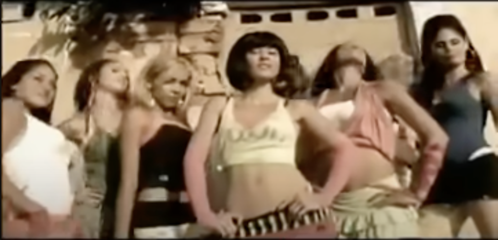
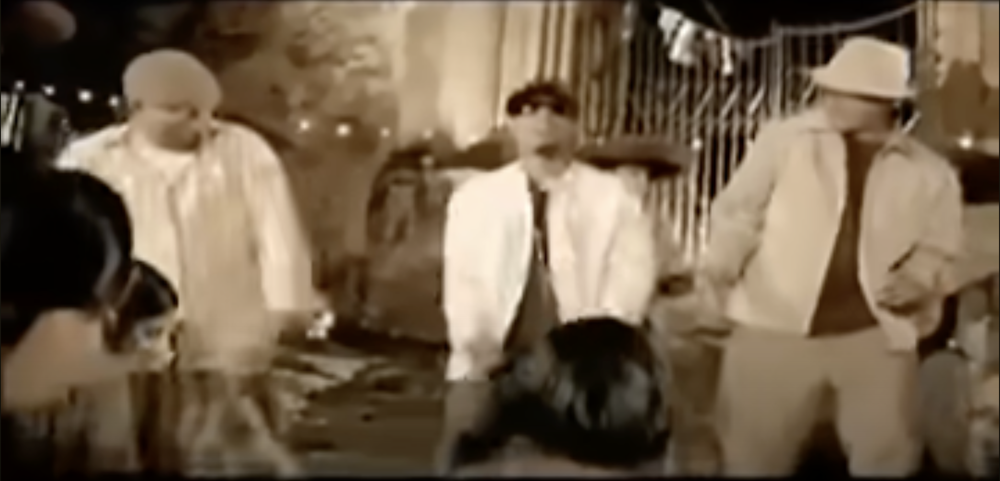
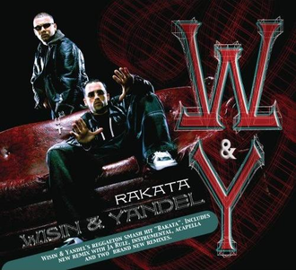
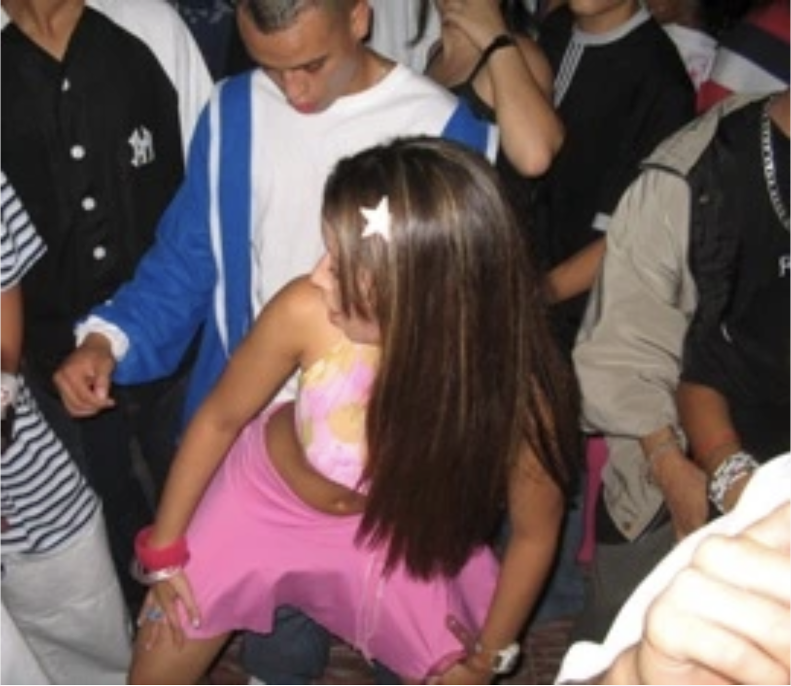
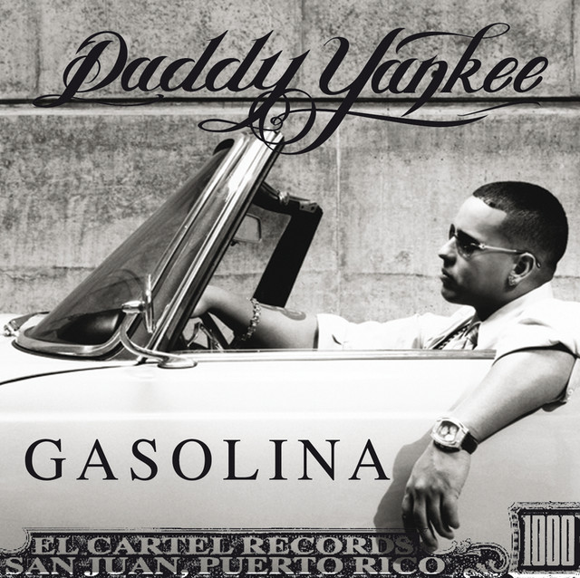
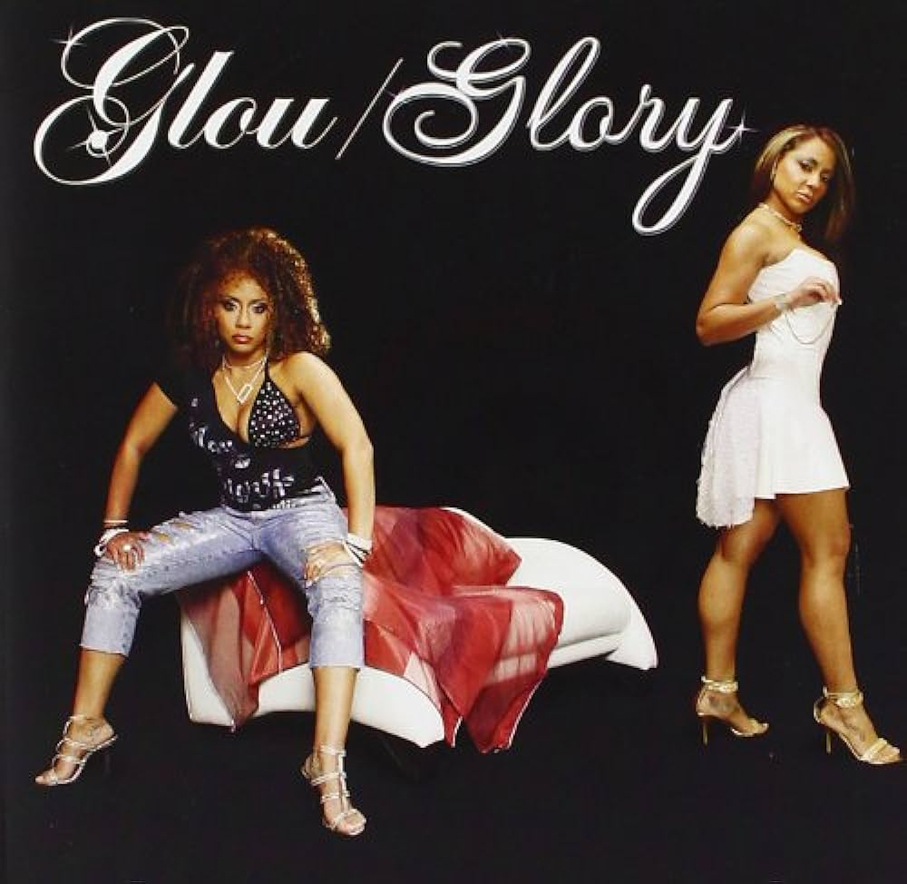
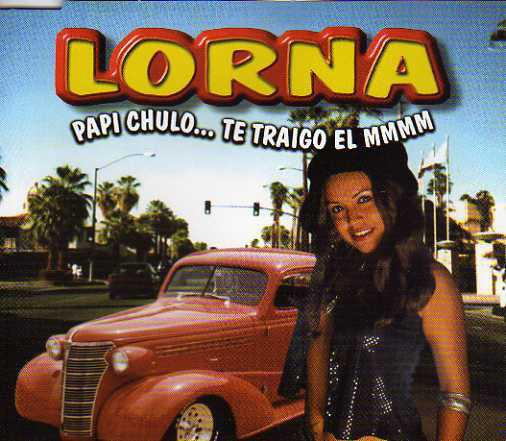

ABSTRACT
In the genesis of Reggaeton, its roots were in working-class Panama before expanding across the Spanish-speaking Caribbean. The early 2000s witnessed its transformation into one of the world's most pervasive music genres, transcending cultural boundaries. Nonetheless, reggaeton has elicited prejudice from different points of its history, stemming from the time of its raw and underground origins in poor communities. Accusations of promoting anti-values like commodity fetishism, sexism, and homophobia persist, casting shadows on its cultural significance. Having grown up with reggaeton, it was the first genre I experimented with as a musician and DJ, and to this day, it remains a defining element in my work. My strong link to the genre sparked my interest in the understanding of these sounds, as well as the history, politics and social issues behind them. The truth is, despite being labeled "low class" and "inferior," Reggaeton remains resilient, it persists, prompting an important question: Can we separate the art of reggaeton from these misconceptions?
Aside from a historical overview and analysis on the genre, questions arise from its inclusion in the mainstream and its appropriation on dance floors in the Global North:
What is the future of reggaeton?
Has the adaptation of reggaeton into the mainstream gone too far?
Is reggaeton dead?
Through music, history and opinion, this thesis aims to deconstruct Reggaeton — and defend it.
IN DEFENCE OF REGGAETON
With reggaeton comes history, artistry, criticism and of course, change, like most genres. It’s been a known genre for at least 25 years, passed by every dance floor, deemed trashy and then popular. As it has become popular, it should be contextualised and understood. Should we give grace to this genre despite all the condemnation? What is the global future of reggaeton? To understand this we need to look at its roots, its iterations and the reactions it has gathered. With so much change and adaptation, many consider reggaeton to be dead.
Is it?
I have no interest in misconstruing facts to my own agenda. Some things are just true. There’s things that have been said and done that no one should be proud of, just like there are things that I have done that I’m not proud of either. Things just are. We can’t change anything that happened before, all we can do is educate ourselves. It’s impossible to talk about this genre of music without mentioning the social issues linked to it. Reggaeton has been heavily criticised, notably for how it negatively represents women and promotes violence and crime. This is the reality linked to this music that can’t be erased, but is this all reggaeton is about? All these negative connotations culminated into various campaigns against reggaeton at different moments of its development. For many, reggaeton is synonymous with all these problematic stances to social issues. In my opinion, reggaeton is a rhythm with a rich cultural background, it’s a story of migration and resistance. It’s so much more than all the stigma and misconceptions about it. To observe reggaeton through these negative connotations is simply limiting, which is why I see an urgency in defending the genre by looking at it through a different lens.
Most of my life I lived in Canada, a country with a rich immigrant community,
where multiculturalism is a cultural standard in big cities. My mother is Spanish,
but she was born in Venezuela, her friend group was mostly women from Latin American
countries as well. I remember discovering reggaeton when I was five or six years old
when my cousin visited from Venezuela and played
one of her favourite tracks on Youtube—
Pasarela⋆


⋆ Stills from Ñejo y Dalmata's Pasarela music video
(2007)
by
Ñejo y Dalmata⋆
⋆ Puerto Rican Reggaeotn duo Ñejo y Dalmata
I could say that day changed my life. The catchy rhythm stuck with me.
It was something we weren’t really allowed to listen to, although I never
understood why. I’ve never lived in a Latin American country and only lived
in Spain for an Erasmus semester during my time in art school, but I was
exposed to latinidad — or “Latin-American-ism” in Canada and through other
relatives. I now produce, DJ and sing over reggaeton.
⋆ Stills from Ñejo y Dalmata's Pasarela music video (2007)
⋆ Puerto Rican Reggaeotn duo Ñejo y Dalmata
Eurowitch is my stage name. I don’t know exactly where it came from but everyone
asks me for an explanation, which is fair. “Euro”… like the continent? the
currency?– is it referring to a single euro coin or the entire money system?
And then there’s “witch”, which is a weird thing to add. A witch is rarely
seen as a positive character, but I always loved that. I remember my mother
calling women with ill intentions as “brujas”—the Spanish word for “witch”.
“Es una bruja” — She’s a witch. I loved it. I picture the evil female character
in a telenovela⋆
⋆ Telenovela character Camelia Valente from the
hit telenovela Gata Salvaje
(soap opera), she doesn’t engage in actual witchcraft, but she’s
mean, calculating, ambitious… I now see myself in these women. After realising my
queerness as a teenage boy, I named myself “Eurowitch” on Instagram. At the time I
wasn’t thinking about this being a testimony of my early exploration of an alter ego,
my femininity, my hidden mischief… I was 14 years old when I changed my instagram
handle from “franciscosebire” to “eurowitch”, and that shit stuck. My friends
started to call me ‘Euro’. All my music shit was made under the name
“Eurowitch” because that was my online presence. The name kind of worked
because I was living in Montreal, Canada. Having family in Europe kind of made
it make sense, exotifying myself in a way. In these teenage moments, I pictured
“Eurowitch” as a brand, a project, an alter ego. “Eurowitch” allowed me to separate myself
from everything I knew. It was a way to construct an ultra-confident version of myself beyond
the confines of a Canadian suburban high school life.
⋆ Telenovela character Camelia Valente from the hit telenovela
Gata Salvaje
I moved to the Netherlands to study, a very wealthy European country where work and productivity is praised (not that much different than in Canada). At the same time I started making music, taking it seriously. Despite the reason for the name “Eurowitch” coming into existence was just to have a different-sounding instagram title, I’ve given it an explanation a few months after starting to perform as an artist and DJ.
Conjuring cash, conjuring money, making it happen, hustling; that’s what I’m about. You need money to live comfortably, which is something I am open about in my work. My name is Eurowitch, but I love all currencies. Reggaeton itself has a conflicting relationship with it, but honestly… who doesn’t love money? I love money, like… my goal is to look good, smell good, have Swarovski teeth gems and not have a fucking worry in the world. Of course money doesn’t remove all the worries you could have, but try to explain that to someone who is breaking a sweat earning nothing, trying to feed their families. Tell that to the early creators of reggaeton who were from lower income communities. I feel like we love to stick to the “money is bad” attitude, which it is, duh, but like what the fuck should I do, starve? Of course there’s more to life than just money. I’ll say that it can be quite blinding to be obsessed with it and show it off, but from another angle it can also be powerful. I see power in being a loud-ass, flashy-ass bitch, with the biggest bottle in the club and the freshest haircut while being able to hold up a conversation about “intellectual” shit like politics, culture, math or science. It’s funny how we say “don’t judge a book by its cover”… this usually applies to people who appear not to care about their appearance, people who blend in. I rarely hear this phrase when it comes to people who dress up, listen to reggaeton and are open about acquiring money. Even within my field of work—the title above the diploma I receive after I graduate, will have to be related to money. Graphic design is generally a practice of business… offering a service for money. With that money we do what we see fit, but we are definitely weaved into a capitalist system, playing the game. Simply put, judging people on how open they are bout money is funny to me for the very reason that we all are involved in this system one way or another.
Showing off money coming from a place of struggle and hustle is a common phenomenon in reggaeton lyrics.
Latin America being a continent that was colonised, stolen and ransacked is
suddenly placing itself in a position to “conquer” the music scene with decisive
arrogance. A “fuck you” from the Global South⋆
 ⋆ Economic classification of the world's countries:
⋆ Economic classification of the world's countries:
the Global North is highlighted in blue and the
Global South is highlighted in red.
winning back a part of what has
been taken from them. After so much general abuse from the Global North,
reggaeton and other urban music genres seem to translate these aesthetics to
show how they can climb a ladder using the tools they have. According to the
criticism the genre has received, reggaeton definitely participates in commodity
fetishism. But if commodities and money are the solution,
reggaetoneros⋆
⋆ reggaetoneros — “reggaeton artists, singers,
rappers”
are proving they can obtain these quickly, even coming
from difficult circumstances.
⋆ Economic classification of the world's countries:
the Global North is highlighted in blue and the
Global South is highlighted in red.
⋆ reggaetoneros — “reggaeton artists, singers, rappers”
Reggaeton’s success has been described as a reconquista⋆
⋆ reconquista — “reconquest”, making reference to
a historical period and term describing the kingdom
of Castille’s “take back” of the Iberian peninsula
from 711 to 1492 (modern day Spain). Ironically,
Puerto Rican reggaeton duo Héctor y Tito used this term to name an album in 2002:
A La Reconquista⋆

 ⋆ Cover and CD design of Hector y
⋆ Cover and CD design of Hector y
Tito’s album A La Reconquista—
“To The Reconquest”
. This is one of the genre’s album’s that revolutionised reggaeton
in Latin America and one of the first to substantially enter the music market in
the United States and the rest of the world.
⋆ reconquista — “reconquest”, making reference to a historical period and term describing the kingdom of Castille’s “take back” of the Iberian peninsula from 711 to 1492 (modern day Spain)
⋆ Cover and CD design of Hector y Tito’s album A La Reconquista—“To The Reconquest”
Chulería is the Spanish word for “arrogance”, in reggaeton, this concept is ubiquitous.
Mama mía, por estar con tanta satería
Pa’ atrás; pa’ atrás
Tan-Tan Chulería
"Oh my, since you're being so flirty
To the back; To the back
So much, So much Arrogance"
(La Barría by Wisin y Yandel, Héctor el Father, 2005)
I admire the “nouveaux riches”— “new money” people.
People who dress with a goal to show off wealth⋆
 ⋆ Photos of urban music artist Anuel AA posted to his
⋆ Photos of urban music artist Anuel AA posted to his
instagram (2021). This post was heavily criticised,
inciting social media users to call him a “clown”
and “lacking humility”.
.
Silver, gold, Versace, big hair, big lips, big hoops.
More is more. I’m quite bored of the “old money” thing —
where the aesthetic goal is to blend into an elite with
generational wealth and a trust fund. I’ve never been in a
position of poverty or insecurity when it comes to commodities.
I don’t have access to everything I would want, but I’ve never gone
to bed hungry. Reggaetoneros who didn’t have all these privileges still
choose to talk about these things in their music. It’s a lifestyle
and a choice like any other.
⋆ Photos of urban music artist Anuel AA posted to his instagram (2021). This post was heavily criticised, inciting social media users to call him a “clown” and “lacking humility”.
Is this perpetuated by capitalism and consumerism? Absolutely. But they’re playing the fucking game. They are using the tools they have to express their desires. Isn’t that what we all do in the arts? Don’t we as a culture represent our realities? Our ideals? People who label reggaetoneros as “trashy”, “arrogant” or “show-offs” see this as an excuse to discard and put down the genre even more without understanding its context. When people argue that a genre solely exists for the promotion of “anti-values” like commodity fetishism, it’s an opportunity to understand where this music genre is coming from. It’s so easy to use the blanket statement “reggaeton is bad and immoral” just because of certain musical artists singing about obtaining money and objects. Music makes culture, but the stories behind this music come from already existing problems and phenomenons. These stories come from reality.
BLANQUEAMIENTO
As a singer, producer and DJ, I’ve seen reggaeton’s change, adaptation and, ultimately, bastardisation. There’s so many points in history where we have seen art forms change in nature to be more palatable to a different audience, I believe this has happened many times with reggaeton. It’s important to remember that this genre started in Panama. As I mention time and time again, the construction of the reggaeton musical structure is directly linked to the African diaspora. It’s also rooted in poor black communities that faced troubling social issues.
Because of the popularity of this genre it has faced a lot of blanqueamiento⋆
⋆ blanqueamiento—"bleaching" or "whitening"
.
As it gained popularity in other countries of Latin America, it was commonly understood that the genre
related to the bajo mundo⋆
⋆ bajo mundo—"lower world"
, but it definitely underwent many changes for it to be more commercially viable.
I don’t really think this commercial adaptation⋆
 ⋆ Cover for Don Omar’s single — Reggaeton Latino
⋆ Cover for Don Omar’s single — Reggaeton Latino
(2005), a track that encapsulates reggaeton’s
adaptation to a broader market, calling itself
“Latino”, in the sense of relating to the entire
Latin-American continent.
lost the essence of reggaeton at the time, but it was
definitely a foreshadowing of what was to come.
⋆ blanqueamiento—"bleaching" or "whitening"
⋆ bajo mundo—"lower world"
⋆ Cover for Don Omar’s single — Reggaeton Latino (2005), a track that encapsulates reggaeton’s adaptation to a broader market, calling itself “Latino”, in the sense of relating to the entire Latin-American continent.
Reggaeton had its conception in the 1980s when Jamaican workers traveled to
Panama to help build the Panama Canal and reggae was adapted to the Spanish-speaking culture. In the 1990s,
the genre made its way to Puerto Rico via Jamaican immigrants”.
—maquettewire.org
“Reggaeton, at times mistakenly referred to as reggae or reggae in Spanish, is a younger genre that originated in Puerto Rico in the 1990s. The preferred spelling on the island is “regueton,” following the Puerto Rican custom of adding the suffix “ton” to a word for emphasis. Thus, “regueton” means “super reggae,” reggae Puerto Rican style. The new genre synthesised Spanish reggae from Panama and hip-hop with Latin American and Caribbean rhythms such as Salsa. Over the past decade, it has become one of the most popular genres in Spanish-speaking Caribbean countries such as Puerto Rico, Panama, the Dominican Republic, Cuba, Colombia and Venezuela. It has extended throughout Latin America and within mainstream Western music. It emerged from youth culture seeking to express itself, and existed on the fringes of society and the law. It depicted the troubles of inner-city life with sexually-charged content and explicit lyrics about drugs, violence, poverty, friendship and love. It was found threatening and deemed immoral and artistically-deficient. The Puerto Rican Police launched a campaign against it, confiscating cassette tapes from music stores under penal obscenity codes, levying fines and demonising rappers in the media as “irresponsible corrupters of the public order.” The Department of Education banned baggy clothing from schools. Bootleg recordings and word of mouth became the primary means of distribution of the underground music”. — musicorigins.org
I have an issue with how reggaeton is being taken away from its roots to be more palatable to European and North American audiences. On top of not wanting to call anyone out or naming any names.
When it came to this “purity” or “essence” of reggaeton being changed, I knew I had to speak
with LoMaasBello⋆
 ⋆ Music artist LoMaasBello
, an urban music artist and activist based in Colombia. When I met her, she was on a European tour
to perform her music, much of which I already was a fan of. As a black trans woman in Colombia, she has a strong
story to tell and an important perspective about this subject.
⋆ Music artist LoMaasBello
, an urban music artist and activist based in Colombia. When I met her, she was on a European tour
to perform her music, much of which I already was a fan of. As a black trans woman in Colombia, she has a strong
story to tell and an important perspective about this subject.
⋆ Music artist LoMaasBello
Like many of us, LoMaasBello grew up with reggaeton and saw it change. She enjoys
reggaeton because it tells stories⋆

 ⋆ Still from LoMaasBello’s music video and single
⋆ Still from LoMaasBello’s music video and single
cover for "Rico"
of el barrio, which hasn’t always been the case with other mainstream genres.
⋆ Still from LoMaasBello’s music video and single cover for "Rico"
“Reggaeton would describe what would happen in the barrios with racialised people, so it’s always been a part of my DNA”.
Me Culeas
Me Culeas
Me Culeas tan
Rico Rico Rico
"You fuck me
You fuck me
You fuck me so
Good Good Good"
(Rico by LoMaasBello, 2022)
I ultimately wanted to know about her thoughts on blanqueamiento , this term that has been used time and time again to describe the changes the genre has undergone to satisfy a more global audience—a more commercial one. From a racial point of view, she explains how it’s literally being bleached, whitened. The majority of reggaeton artists are white or white passing. She explains how reggaeton, being a genre starting from dissidence and protest, is not only being cleaned up in terms of its content and subject matter, but whitened in terms of the people performing it.
Latin America is a very complex continent that is often generalised as containing a single unified race. Racial issues in the continent are complex and varying from area to area, but that doesn’t sell. “The bleaching of reggaeton is something that happened—or is happening— with the majority of genres. Let’s say that reggaeton was ‘dirty’, ‘low class’, ‘ghetto’, until it started to get bleached. Before, reggaeton didn’t have a prize category in the Latin Grammys, it wasn’t taken into account for many things like brand deals until it started to get bleached. Here in Latin America, white & mestizo (mixed race) people often proclaim to be part of one big race, […] when in reality these people represent the elite. Under these measures, they exercise practices of oppression towards others truly racialised”.
Reggaeton comes from a set of complex issues. Mainstream music services have pushed a specific narrative of reggaeton for it to sell, disregarding the black origin of the genre. Through speaking to LoMaasBello, I’ve gained a perspective on my research that is out of my context. Looking through the lens of a trans Afro-Colombian artist that understands her social impact in her practice has helped me further understand all these complexities. It’s inspiring to see how LoMaasBello can understand the roots of this genre while representing her communities with pride.
How do we un-bleach reggaeton—if it is indeed being “bleached”… Being a white man creating reggaeton while benefitting from systems of power in the Global North, am I not part of the problem? Am I also bleaching reggaeton? As with most issues, I don’t think it’s that simple to have an answer. Music is constantly flowing from culture to culture. According to Ruka Hatua-Saar White’s article on cultural appropriation in music for Berklee, “Borrowing from other cultures is inevitable, but there are positive ways in which it can be done. We should engage with other cultures on more than just an aesthetic level”.
Artists who produce reggaeton should know what it’s about, as in, its history and background. Inevitably, people who are from the areas where reggaeton was developed will most likely understand these complexities… Others, such as myself, should be able to “back up” their work with facts… How are you gonna take from another culture without wanting to understand as much as you can behind it? To me, it’s clear that it can only bring benefits to respect another culture overall, especially when it comes to their means of expression. Despite this, this subject is not black and white; all this is of course subjective… No one is being forced into following this way of seeing music production (and art-making in general), but it’s important to observe the footprint left by the ones that walked before us.
It’s important to read the room. Reggaeton generally being so flashy and visual, tends to show the main artist as powerful, at the top of their game. Who is being protagonised?
I think people are usually surprised
that I’m such a fan of reggaeton and the culture behind it.
When I started making it, it brought similar reactions.
In the social context where this genre was born, homosexuality
was frowned upon. The dancehall track “Dem Bow” by Shabba
Ranks⋆
 ⋆ Jamaican Artist Shabba Ranks’s Dem Bow
⋆ Jamaican Artist Shabba Ranks’s Dem Bow
single cover (1990)
, inspiring reggaeton’s beginnings, is an anthem for
empowerment, but it unfortunately also denounces gays.
Wayne Marshall, Jamaican DJ and musician, called the
track Dem Bow “the patient zero of the genre”.
According to him, the message of the song is:
“Don't Bow to oppression, in particular the
pressures toward such deviant sexual practices as oral
sex and homosexuality”.
⋆ Jamaican Artist Shabba Ranks’s Dem Bow single cover (1990)
Dem bow, dem bow, dem bow
Man under table mi say dat him, bow
Gyal a gi' batty wash out she, bow
Athlete lick out and mi know a gyal, bow
A man a eat fur, dat mean say him, bow
Sex in bottom, dat mean a guy, bow
—Shabba Ranks, Dem Bow, 1990
It’s impossible to talk about Jamaican
reggae and dancehall music without the cultural politics of the
time, which were effectively infused into its Spanish language
equivalent in Panama. El General⋆
 ⋆ Panamanian artist El General is considered to being
⋆ Panamanian artist El General is considered to being
the first commercially successful reggaeton singer.
The genre was known at the time of this album’s
release as “Reggae in Spanish” or “Spanish Reggae”.
Estas Buena (1991) was his breakthrough album.
, reggaeton’s first commercially
successful artist, translated this song to Spanish with the title
Son Bow⋆
⋆ El General’s “Son Bow” was created in a similar
message as the original Jamaican track. "Bow" in
Jamaican patois meaning the verb to bow, like
in English, but the Spanish translation changed it to
a noun, a Bow, in this case, is someone who
participates in this immorality, who can’t stand up
for themselves.
.
⋆ Panamanian artist El General is considered to being the first commercially successful reggaeton singer. The genre was known at the time of this album’s release as “Reggae in Spanish” or “Spanish Reggae”. Estas Buena (1991) was his breakthrough album.
Son bow
Son bow, son bow, son bow
Un hombre bajo una mesa, es un bow
Y bajo en la cama digo es, son bow
Con la puerta cerrada se vuelve, un bow
Y bajo en la sábana digo es, son bow
So, laba laba laba en la boca, bow
“They’re Bow
They’re Bow, they’re bow, they’re bow
A man under the table, that’s a bow
And under the bed, I say, they’re bow
With the closed door he turns into a bow
And under the bedsheet I say, they’re bow
So wash wash wash in the mouth, bow”
—El General, Son Bow, 1991
⋆ El General’s “Son Bow” was created in a similar message as the original Jamaican track. "Bow" in Jamaican patois meaning the verb to bow, like in English, but the Spanish translation changed it to a noun, a Bow, in this case, is someone who participates in this immorality, who can’t stand up for themselves.
Anti-gayness can be seen at any point
in reggaeton’s timeline – Don Omar, one of the genre’s
biggest artists, has been recently under fire for homophobic tweets⋆
 ⋆ Homophobic tweet from reggaeton artist Don Omar.
⋆ Homophobic tweet from reggaeton artist Don Omar.
“Lunch break! Are some of you eating pato (duck,
also a homophobic slur, equivalent of “faggot”)?
Not me”. Making reference to Kevin Fret’s
murder and alleged
involvement with Ozuna days prior.
.
⋆ Homophobic tweet from reggaeton artist Don Omar. “Lunch break! Are some of you eating pato (duck, also a homophobic slur, equivalent of “faggot”)? Not me”. Making reference to Kevin Fret’s murder and alleged involvement with Ozuna days prior.
Another troubling subject is the death of
Kevin Fret⋆
 ⋆ Puerto Rican rapper Kevin Fret. Murdered in 2019.
. Kevin Fret was a Puerto Rican rapper who was slowly
gaining success before being shot in 2019. Many suspect singer
Ozuna to be involved in his death over concerns of blackmailing;
exposing a relationship they might’ve had. Ozuna later confirmed
he was in a gay porn video when he was allegedly underage, which
was also often mentioned by the killed singer. To this day, no
one knows who is responsible for Kevin Fret’s death, but in a
homophobic, male-dominated society, this seems like much more
than a coincidence.
⋆ Puerto Rican rapper Kevin Fret. Murdered in 2019.
. Kevin Fret was a Puerto Rican rapper who was slowly
gaining success before being shot in 2019. Many suspect singer
Ozuna to be involved in his death over concerns of blackmailing;
exposing a relationship they might’ve had. Ozuna later confirmed
he was in a gay porn video when he was allegedly underage, which
was also often mentioned by the killed singer. To this day, no
one knows who is responsible for Kevin Fret’s death, but in a
homophobic, male-dominated society, this seems like much more
than a coincidence.
⋆ Puerto Rican rapper Kevin Fret. Murdered in 2019.
I’ve often said that my love for reggaeton trumps the heteronormativity that surrounds it. To put it simply, I would rather go to a party that plays urban music than a party that shields itself from anything that isn’t queer. This could sound shocking, but I believe the scene has changed overall.
Newer generations are definitely
more accepting of LGBTQ+ identities within their music
sphere, and diversification of reggaeton has offered a
lot more room for expression. We now have mainstream
artists like Villano Antillano⋆
 ⋆ Puerto Rican rapper Villano Antillano
, La Cruz, Young Miko and
Tokischa as queer references in the genre. But homophobia
and transphobia is an every day reality in the whole world,
so there is a lot of work to be done. I don’t see reggaeton
through it’s homophobia, although I will admit that it
definitely exists, but instead of denouncing an entire
genre, the solution lies in denouncing society and it’s
individuals. For me, a “safe space” can be a great tool
for people to be shielded from potential harm, but I see
my work, and the work of countless others, to open up
existing spaces to the idea of queer acceptance.
⋆ Puerto Rican rapper Villano Antillano
, La Cruz, Young Miko and
Tokischa as queer references in the genre. But homophobia
and transphobia is an every day reality in the whole world,
so there is a lot of work to be done. I don’t see reggaeton
through it’s homophobia, although I will admit that it
definitely exists, but instead of denouncing an entire
genre, the solution lies in denouncing society and it’s
individuals. For me, a “safe space” can be a great tool
for people to be shielded from potential harm, but I see
my work, and the work of countless others, to open up
existing spaces to the idea of queer acceptance.
⋆ Puerto Rican rapper Villano Antillano
Queering a space more radical than creating a new one. I love reggaeton as a rhythm, a genre. Real reggaeton — reggaeton de la mata. I don’t want to lose this essence; on the contrary, I wish to see it accessible for queer people too.
I’ve never really been at risk in my context to perform my tracks, but in different contexts I could be. Being openly Queer and making reggaeton is something that isn’t easily done in the countries where the genre was born. I’m in the safety of Europe producing and performing music originating in poor communities and with homophobic discourse. Because I appreciate and respect the cultures behind this music, I want to use my platform to express this appreciation as well as the issues that surround the communities where reggaeton is from. The only way to move forward is educating myself as much as I can. I stand for Queer representation, but I also stand for respecting the genre’s roots.
Historically, reggaeton is explicit, and that’s one of the reasons why it’s been so heavily criticised. I don’t know why people are so mad at it, these music genres were made to be played in the club, like what do you expect? People use the club to express their sexuality all the time. Many of us go to the club to seek sexual gratification, reggaeton being so club-heavy is definitely related to this phenomenon. This doesn’t only apply to reggaeton though, as many other genres of music can be heard in clubs globally, relating to the same ideas. I don’t see how anything sexual could be an issue if it’s all consensual. Even if I already don’t fit in the standard when it comes to the mainstream club scene, being queer, I still found a way to express myself and my sexuality with reggaeton.
Because I see reggaeton as ostentatious, raw and unapologetic⋆

⋆ Cover for Plan B’s single — Candy
Le gusta lo kinky, nasty y aunque sea fancy
Se pone cranky si le hago romantic
Le gusta el sexo, en exceso
Y en el proceso, me pide un beso
“She likes what is kinky, nasty and even if she’s fancy
She gets cranky if I do it romantic
She likes sex, in excess
And in the process, she asks for a kiss”
(Candy by Plan B, 2014)
I remember my best friend Isabella, back in Montreal,
raving about one of the most played songs in reggaeton, Rakata⋆

⋆ Cover for Wisin y Yandel’s single—Rakata
by Puerto Rican
duo Wisin y Yandel⋆
 ⋆ Puerto Rican reggaeton duo Wisin y Yandel
(2005).
⋆ Puerto Rican reggaeton duo Wisin y Yandel
(2005).
⋆ Cover for Wisin y Yandel’s single—Rakata
Salte (W con—)
Si no estás bailando con ella, salte (Y, Yandel)
Si no estás perreando con ella, salte
(Luny, medio millón de copias obliga'o)
Si no estás bailando con ella, salte
(El dúo de la historia, en "Mas Flow 2"; ¡sumba!)
Para hacerle rakata, rakata
Get out (W with—)
If you’re not dancing with her, get out (Y, Yandel)
If you’re not grinding with her, get out
(Luny, half a million copies mandatory)
If you’re not dancing with her, get out
(The best duo of all time, in "Mas Flow 2"; Sumba!)
To do to her rakata, rakata
(Rakata by Wisin & Yandel, 2005)
⋆ Puerto Rican reggaeton duo Wisin (right) y Yandel (left)
We both love this song, not just because of its production, but the message behind it. The song is loosely about dancing in the club with a woman, but this explosive start is basically saying “Get out! If you’re not gonna dance and grind with her, get out”!
Superficially, a listener might accuse these lyrics of being sexist, but I remember Isa defending it saying: “If you’re not gonna dance with her, let her shine and treat her well, get out. Don’t even bother”. In a funny way, this really stuck with me.
Sometimes you have to read between the lines when it comes to sexual and “provocative” lyrics. It’s important to mention the context of any art form, and a song like this is no exception to that rule. Here, there is a testimony that proves that reggaeton has offered a space for expression in sexuality. My point with this is that instead of jumping to conclusions, we should understand that this art form can be more nuanced.
A link can be made with colonisation and the repression of different cultures through catholicism. Pan-African rhythms from enslaved people arrived to Spanish colonies bringing along dancing that was heavily stigmatised. The oppression of African cultures that had a very different, open relationship to sex compared to Europeans did not consider these dances to be provocative or immoral. It’s not far-fetched to say that our “hypersexual” view on reggaeton can be attributed to residual consequences of colonialism.
In religious contexts, sex and sexuality was taboo for a very
long time.
Reggaeton was often criticised from a christian perspective for being too sexual⋆

⋆ Reggaeton is danced with perreo, a verb originating
in Puerto Rico that can literally be translated
to “dogging”, seemingly starting off as an imitation
of how dogs
would position themselves during
coitus.
The English-speaking Caribbean equivalent term
to perreo would be wining – to wine.
In the USA and Canada the equivalent would
be grinding.
Reggaeton is definitely commonly danced in an
overtly sexual way, but I’ve always seen it as
something liberating – freeing.
.
⋆ Reggaeton is danced with perreo, a verb originating
in Puerto Rico that can literally be translated to “dogging”, seemingly starting off as an imitation of how dogs
would position themselves during
coitus.
The English-speaking Caribbean equivalent term to perreo would be wining – to wine. In the USA and Canada the equivalent would be grinding.
Reggaeton is definitely commonly danced in an overtly sexual way, but I’ve always seen it as something liberating – freeing.
Women and their representation are a very central theme in reggaeton. It’s no lie that objectifying women in this music genre is common, which has brought a lot of criticism. A large part of society is convinced that reggaeton is synonymous with women’s oppression, creating unsafe dance spaces where the intentions of certain men could be exasperated by striking lyrics. In many reggaeton tracks, female recording artists would be placed in the forefront of the song without being credited.
Gasolina⋆

⋆ Gasolina single cover for Puerto Rican reggaeton
artist Daddy Yankee (2005). Arguably the most
famous song in reggaeton history. The song features
the voice
of female reggaeton artist Glory in the
chorus.
(2005), Daddy Yankee’s arguably most popular song in the genre
that propelled reggaeton to international audiences. In the chorus of the track, a female voice
sings a mi me gusta la gasolina, dame más gasolina – “I like gasoline, give me more gasoline”…
The uncredited voice behind this famous phrase is Glory⋆

⋆ Cover design for Puerto Rican reggaeton singer
Glory’s
first and last album titled with her name.
Here she
depicts herself in using a good/bad,
wild/tamed — a display of her two sides.
, an almost unknown reggaeton artist
that has appeared on countless famous tracks in the genre. In this specific context, it’s
safe to say that sexism is involved. This is why representation matters! Instead of “shutting down”
an entire genre because of the sexism and homophobia that surrounded it, why can’t we strive to seek
equality in it. We don’t stop watching a specific genre of film or tv show because some of the content
under it has been sexist, why would we do the same with reggaeton? Reggaeton has a rich history of
migration and resistance, which can apply to other communities. The truth of the matter is that
reggaeton is not inherently sexist… it’s surrounding is, the framework behind a specific artist
or song is, society is.
⋆ Gasolina single cover for Puerto Rican reggaeton artist Daddy Yankee (2005). Arguably the most famous song in reggaeton history. The song features the voice of female reggaeton artist Glory in the chorus.
⋆ Cover design for Puerto Rican reggaeton singer Glory’s first and last album titled with her name. Here she depicts herself in using a good/bad, wild/tamed — a display of her two sides.
Then again, like many other social issues relating to this genre, it’s difficult to judge what’s right and wrong. Who really decides that? Of course, women being objectified to the point of perpetuating more sexism in the world is horrible. Feeling uncomfortable in clubs as a woman obviously isn’t a good thing. But to understand this issue it’s important to also accept the context of this genre’s underground beginnings in the Caribbean and Latin America. Women in this geographical and socio-economic context are surrounded by a very different reality than the one in Europe. Demonising ass-shaking and sexual freedom could also be seen as a form of sexism.
Women owning and understanding their own condition and “playing the game” to prosper in a certain industry has been seen in history over and over.
An icon in reggaeton’s history is Ivy Queen⋆
 ⋆ Puerto Rican reggaeton singer Ivy Queen (2005)
, a female Puerto Rican rapper that paved the way
and made history for women artists to get in the urban music game. Her hit song Yo Quiero Bailar⋆
⋆ Puerto Rican reggaeton singer Ivy Queen (2005)
, a female Puerto Rican rapper that paved the way
and made history for women artists to get in the urban music game. Her hit song Yo Quiero Bailar⋆
 ⋆ Cover for Ivy Queen’s album — Diva (2005)
, meaning “I Wanna Dance”, talks
about women owning their sexuality dancing in the club. This song was a response to men expecting sex with women and grabbing them aggressively without consent. This song became a feminist club anthem.
⋆ Cover for Ivy Queen’s album — Diva (2005)
, meaning “I Wanna Dance”, talks
about women owning their sexuality dancing in the club. This song was a response to men expecting sex with women and grabbing them aggressively without consent. This song became a feminist club anthem.
⋆ Puerto Rican reggaeton singer Ivy Queen (2005)
Yo quiero bailar
Tú quieres sudar
Y pegarte a mí
El cuerpo rozar
Yo te digo: "sí, tú me puedes provocar"
Eso no quiere decir que pa' la cama voy
“I wanna dance
You wanna sweat
And get close to me
Our bodies touch
I tell you ‘yeah, you can provoke me’
That doesn’t mean I’m going to bed”
(Yo Quiero Bailar by Ivy Queen, 2005)
⋆ Cover for Ivy Queen’s album — Diva (2005)
Based on the lyrics of this iconic song, we can somewhat understand that not all reggaeton is in a vacuum. Women in the genre have created names for themselves fighting sexism. Despite there being a lot of work to do to combat this issue, today, we have countless female reggaeton artist at the top of their game.
I spoke with a good friend of mine, Sandra Zegarra Patow,
otherwise known by her stage name as Veinte Uñas⋆
⋆ DJ and multidisciplinary artist Veinte Uñas
Veinte Uñas — Twenty Nails, an allusion to the
twenty
toes and fingernails that touch the ground
when someone
is twerking or perreando
on all fours.
. As a first generation Peruvian Rotterdam-based DJ
who spins reggaeton tracks, owns her sexuality, she stands out from other DJs in the
Netherlands with her flashy outfits. I’ve worked with her on many projects.
One of them is PERREO31⋆
⋆ Soundcloud cover for PERREO31 - NEW YEAR,
SAME PERRAS. A DJ set by Veinte Uñas
and Eurowitch. (2024)
, a radio show on Echobox, where we discuss all things
reggaeton, juxtaposed with the themes of queerness and feminism. I wanted to
round off her perspective on being a woman in a male-dominated field, and the
story behind hyper-sexualising her image.
⋆ DJ and multidisciplinary artist Veinte Uñas
Veinte Uñas — Twenty Nails, an allusion to the twenty
toes and fingernails that touch the ground when someone
is twerking or perreando on all fours.
⋆ Soundcloud cover for PERREO31 - NEW YEAR, SAME PERRAS. A DJ set by Veinte Uñas and Eurowitch. (2024)
Reggaeoton is from el barrio, it involves gang things like putas⋆ ⋆ putas — informal word for “prostitutes”, “hoes” , drogas⋆ ⋆ drogas — "drugs" and sex… thats mostly what is talked about in all reggaeton songs. And I know it’s sometimes sexist lyrics, but at the same time I don’t feel like I’m not getting empowered by it. […] As a woman I stand by my own sexuality and I am comfortable in my own space in general. I don’t sexualise myself for others… I use it for my advantage. […] A lot of people think that I dress for men, but I dress for me. It helps me to feel beautiful, sexy. […] I can play with dressing up and being Veinte Uñas is for my own pleasure… I get off with it.”
⋆ putas — informal word for “prostitutes”, “hoes”
⋆ drogas — "drugs"
From my perspective, I’ve seen a slow adaptability of the urban music sphere to the LGBTQ community. I wanted to ask Veinte Uñas about how women are included in these spaces today from her point of view.
“The urban scene has gotten more adaptable to women, yes. I get booked by different female-led collectives that showcase different kinds of music, so it’s getting better, but it’s not enough. We see that any lineup is mostly males. I see that a lot of bookers try to book females to ‘balance out’ the night. […] The thing is that there’s a lot of people that don’t see women or queer people in these environments… We still are kind of like the ‘weird kids’ coming over and taking our space or doing our thing. Slowly it’s getting more normalised, and I’m also taking my share. […] At the end of the day many guys go to the club to see a female dance, so if they see a girl DJing it’s like an ‘extra vibe’ that adds something else… A female energy is always nicer than when theres only men… you need that Yin and Yang anyway. But I always feel like there is mansplaining happening when I arrive to my DJ gig. […] Sometimes they (sound guys) ask me if I know how the equipment works — I mean, cute haha, I do know!
Next to that, I try not to think of what others think of me when I arrive, I just take up the space and do my thing because I got booked. I do what I do best. In the back of my mind I know they look at me and they have some kind of vibe like… “Here’s a pretty girl who just wants to DJ”. No bitch! I’m gonna show you that I know how to DJ well. You have to give the best out of you, not to prove to anybody, but you of have to show a bit of a serious way of playing.
There’s always the DJ dude that gets fucked up and plays like shit and nobody cares because it’s a guy…He fucks up a bit but nobody says anything because it’s a guy.Sometimes it’s frustrating to have to work harder to be in the same position men have been in with no effort. In the back of my mind I already know that this is part of the game and this is how to play it. I have to be okay with it, because since the moment I was born I’ve had to work twice as hard to do what I do and to prove myself.”
THE DEATH OF REGGAETON
What is the state of reggaeton today? A controversial opinion is that reggaeton is already dead. Yes, dead.
To be frank, I believe the true essence of reggaeton is lost and has been swallowed by pop. I wish this was
just my opinion as an angry reggaeton nerd, but many pioneers in the genre have stated their thoughts on this
supposed death. Panamanian singer and producer El Chombo⋆
 ⋆ Panamanian Producer and DJ El Chombo
, famous for his popular tracks Dame Tu Cosita (featuring Cutty Ranks)⋆
⋆ Panamanian Producer and DJ El Chombo
, famous for his popular tracks Dame Tu Cosita (featuring Cutty Ranks)⋆

 ⋆ Dame Tu Cosita was originally featured on El
⋆ Dame Tu Cosita was originally featured on El
Chombo's album "Cuentos de la Cripta 3",
it became the soundtrack of a very popular meme
video of a dancing alien.
and , famous for his popular tracks Papi
Chulo... Te Traigo el MMMM⋆

⋆ Album cover for Panamanian singer Lorna’s single
— Papi Chulo…Te Triago el MMMM
(with Lorna), has seen the rise of the genre to it’s peak and it’s entanglement with pop. According to him,
labels, artists and producers focused more on streams and making money than actually making reggaeton de la mata,
old school reggeaton that “just doesn’t hit the same way”. There’s a clear difference in production and delivery
from reggaeton made in the 2000s versus most of what is heard nowadays.
⋆ Panamanian Producer and DJ El Chombo
⋆ Dame Tu Cosita was originally featured on El Chombo's album "Cuentos de la Cripta 3", it became the soundtrack of a very popular meme video of a dancing alien.
⋆ Album cover for Panamanian singer Lorna’s single — Papi Chulo…Te Triago el MMMM
The truth is, when any genre looses its original target audience to make money, it most likely looses its essence. When I mean “essence” I mean general characteristics and way of rapping which used to be non-negotiables and necessary to producing. When you get on Spotify and look up a “new” reggaeton playlist, it’s definitely many times more aligned to pop than anything else. According to El Chombo, reggaeton has certain characteristics and a way to deliver them, which are rarely being met with popular reggaeton tracks being made today.
I would like to mention my own perspective on the matter. A club perspective from the Global North – in a general sense. It’s a bit weird to me when producers (usually European) take vocals from reggaeton tracks and paste them on a techno beat or “deconstruct” a reggaeton rhythm to make it sound different. They make it sound so different that it isn’t reggaeton anymore. I don’t believe these producers deserve brownie points for spicing up a track a bit. It’s definitely a gross generalisation from my end to accuse producers and DJs like this, I’m definitely not speaking from a pure research point of view; this is just my opinion! I just truly believe that there is so much damage in doing this. I don’t want to call it appropriation (when it definitely is), because I feel like that’s an easy way out in this discussion. It’s just straight up weird. I wonder what the reactions to these kinds of “intellectualised”, “techno-fied” and “europeanised” versions of reggaeton would gather from the OG listeners of the genre. Maybe I’m a reggaeton “purist”, but I can’t stand to see the DJ playing after me open up a “Perreo” playlist on the CDJs, and the entire track list is just… rave shit? I don’t know what it is, but call it what it is.
How did reggaeton end up in Europe? It certainly wasn’t an immediate process. The Canary Islands⋆
 ⋆ A map depicting the Canary Islands and its
⋆ A map depicting the Canary Islands and its
proximity to mainland Spain
are unofficially the first
area outside of Latin America where reggaeton was heard. This small Spanish archipelago off the coast of Morocco has a similar culture to some Latin
American countries like Puerto Rico, Venezuela and Cuba. Reggaeton spread from here to the rest of Spain in the 90s and early 2000s, which was
then again spread to the rest of Europe. Just like the rest of the world, Spain is divided on the stance of reggaeton’s morality and quality. After all this
commercial success and “hype”, today we are saturated with commercial iterations of reggaeton repeating themselves, as well as the dwindling of reggaeton
de la mata in clubs… It was cool to milk reggaeton for all it’s worth here in Europe for a while. It’s easy for us to spit it back out real quick to go
back to techno or dilute it with pop. This is really one of the cringiest events I’ve witnessed in all music history. Europeans begging for
reggaeton in clubs and now that they’re done with it they reject it. I guess this is cultural appropriation at its finest.
⋆ A map depicting the Canary Islands and its proximity to mainland Spain
I dislike the term “experimental” when it comes to more contemporary producers making reggaeton. Firstly, calling something “experimental”, intellectualising it. It’s saying “we’re better than you” it’s saying “we’re gonna cherry-pick what we like about this genre and we’re gonna make it inaccessible”. You can fuck up reggaeton and deconstruct it, make it sound more contemporary, with newer techniques, fuck, I wouldn’t even care if people said “I wanna challenge what this genre can do, how far it can expand, how crazy I could make it sound”. Don’t get me wrong, there’s newer reggaeton music that has fused with hyperpop that I find truly groundbreaking, but I would never tag it as “experimental”.
In my opinion, reggaeton is truly already experimental. Real perreo is truly experimental. Reggaeton gained commercial success in the early 2000s. But when this genre started, it started with nothing. A mic and a computer, Jamaican music samples, that’s it. To me, this is the definition of experimental. Reggaeton has managed to persist, survive and evolve, mixing itself with electronic sounds, bachata, merengue, calypso, even Indian and Arabic vocals and instruments.
Despite my criticism on how reggaeton (and its iterations) have evolved until today, it’s not necessarily something I’m looking to stop. Like in all music genres, I definitely think it’s impossible to halt the borrowing, appropriation and cherry-picking of certain aspects of reggaeton to create new sub-genres. Just like how reggaeton has stemmed from a synthesis of a variety of genres, it’s safe to say that other genres of music have taken from reggaeton to create their own paths.
Appropriation is a subject in the art world that is constantly under debate. Information has never been so accessible, and with a simple google search or AI prompt, we can obtain a plethora of references to create. There is no exact rule book on how to use already existing pieces of work as building blocks to create something new. Even reggaeton itself is based on using samples again and again… There’s even been lawsuits filed agains certain reggaeton producers and artists for illegally using samples from Jamaica… Despite this, I believe there is a way to take from other genres in a way that honours them. Aside from just using sounds that have a certain history to them blindly, why not honour it? We should honour the stories, struggles and development of these sounds, because they hold cultural meaning.
Reggaeton has recently evolved into new independent genres based on geographic location, and cultural adaptation.
Dembow⋆
⋆ An example of the recycling of reggaeton is
Dembow, a Dominican genre reminiscent of
dancehall
and reggaeton in a faster speed.
The world itself comes from Shabba Ranks’
dancehall
song “Dem Bow” from the 1990s, a
track that has
been constantly referenced and re-used in
reggaeton.
Dembow started on the streets and clubs of
the Dominican Republic. It’s like reggaeton, but
faster.
A genre to dance to in the club when you’re
used to dancing fast Dominican styles of music
like merengue.
,Cumbiatón, RKT⋆
⋆ Cumbia is a separate music genre that holds
a background from the coastal region of Colombia.
As the genre evolved it expanded throughout
Latin America. With the expansion, cumbia has
seen variations of the form, ending up blending
with reggaeton.
A synthesis of reggaeton and cumbia emerged in
Mexico known as Cumbiatón.
Another example of this is RKT (pronounced
“eh-reh-kah-tey”) from Argentina.
RKT is basically this fusion of cumbia and
reggaeton, notable in the use of synthesisers and
hard snares.
and Guaracha⋆
⋆ Guaracha is a type of electronic reggaeton-based
music from Medellín, Colombia.
are a few examples of these. It seems like these
genres that derived from reggaeton have kept a similar essence, whereas reggaeton itself is losing popularity — or dying.
⋆ An example of the recycling of reggaeton isDembow, a Dominican genre reminiscent of dancehall
and reggaeton in a faster speed.
The world itself comes from Shabba Ranks’s dancehall
song “Dem Bow” from the 1990s, a track that has been constantly referenced and re-used in reggaeton.
Dembow started on the streets and clubs of the Dominican Republic. It’s like reggaeton, but faster.
A genre to dance to in the club when you’re used to dancing fast Dominican styles of music like merengue.
⋆ Cumbia is a separate music genre that holds a background from the coastal region of Colombia.
As the genre evolved it expanded throughout Latin America. With the expansion, cumbia has
seen variations of the form, ending up blending with reggaeton.
A synthesis of reggaeton and cumbia emerged in
Mexico known as Cumbiatón.
Another example of this is RKT (pronounced “eh-reh-kah-tey”) from Argentina.
RKT is basically this fusion of cumbia and reggaeton, notable in the use of synthesisers and hard snares.
⋆ Guaracha is a type of electronic reggaeton-based music from Medellín, Colombia.
It also all goes back down to understanding the roots of the genre. Adapting it to current ways of thinking, like the inclusion of women and the LGBTQ+ community in the urban music sphere overall, but not loosing its essence or dismissing it’s origins.
Is reggaeton dead though?
No music genre just dies from one day to another, as I explored in this thesis, it adapts, changes, transforms, gets forgotten… But this doesn’t delete its legacy. Today, reggaeton is thriving on the charts, despite it not being what it used to be. Some parts of the genre and subculture could be dramatically declared “dead”, but clearly this isn’t all the way true.
A part of me secretly wishes for reggaeton to stay dead. If it ever truly dies, this would filter out people who experience the genre purely from a commercial lens. At the end of the day, it’s the people who truly appreciate it who should continue making it.
GLOSSARY
(El) Barrio
(Spanish) Neighbour hood. “(The) Hood”
Bachata
Romantic Dominican music genre
Bajo Mundo
(Spanish) “Under World” – Sector of a population, generally urban and poor, that is characterised by an illicit or reprehensible way of life.
Blanqueamiento
(Spanish) “bleaching” or “whitening” – term used to describe the change reggaeton has gone through to become more commercially viable
Bruja
(Spanish) “witch”
Calypso
a kind of West Indian (originally Trinidadian) music in syncopated African rhythm, typically with words improvised on a topical theme.
Chulería
(Spanish) can have many definitions depending on the country and accent, but this primarily means insolence, but can also be used to describe something that is good, fun, funny, great or even beautiful.
Cumbia
music and dance typical of the Caribbean coast of Colombia, popularised and adapted across Latin America.
Cumbiaton
music genre with origins in Mexico, fusion of Mexican Cumbia and Reggaeton
Dancehall
a genre of Jamaican popular music that originated in the late 1970s. Initially, dancehall was a more sparse version of reggae than the roots style, which had dominated much of the 1970s. Dancehall is named after Jamaican dance halls in which popular Jamaican recordings were played by local sound systems. It both refers to the music and dance style. It faced criticism for negatively influencing Jamaican culture and portraying gangster lifestyles in a praiseworthy way.
Dembow
1. (Dem Bow) Jamaican dancehall track by artist Shabba Ranks' anti-imperialist, anti-gay anthem “Dem Bow,” Jamaican Patois for “they bow”. The song and rhythm influenced reggaeton starting in its origins in Panama.
2. (Métele Dembow) Puerto Rican slang to add a beat to, to add “flow” or style to a track.
3. A faster reggaeton-based Dominican music genre. One of it’s main characteristics is the repetition of words.
Guaracha
A type of electronic reggaeton-based music from Medellín, Colombia. Also known as Zapateo or Aleteo. There is a traditional genre of music from Cuba with the same name that has no connection. This genre was popularised by DJ Víctor Cárdenas and DJ Pereira in the 2010s and kept growing ever since.
Hyperpop
A loosely defined electronic music movement and microgenre that predominantly originated in the United Kingdom during the late 2010s. Hyperpop reflects an exaggerated, eclectic, and self-referential approach to pop music.
Latinidad
(Spanish) Term used to describe various attributes of Latin American people and their descendants. First used in a sociological context by Felix Padilla’s 1985 study on the Mexican and Puerto Rican communities in Chicago
Merengue
Generally fast Dominican music genre and dance.
Mestizo
Mixed race. In Latin America, generally describing people who are white and Indigenous.
Musica Negra
(Spanish) “Black Music”, a large umbrella term to describe afro-american music
Pan-African
Of or relating to all African countries or the advocacy of political unity among African countries.
Deriving from Africa.
Perreo
Puerto Rican word, also dubbed Sandungueo by reggaeton producer DJ Blass, Perreo is a dance that usually accompanies reggaeton. Dancers rub against each other. English-speaking
Caribbean equivalent: Wining.
US and Canada equivalent: Grinding.
Reconquista
1. (Spanish, Historical term) The Reconquista is the period in the history of the Iberian Peninsula of approximately 780 years between the Umayyad conquest of Hispania in 711 and the fall of the Nasrid kingdom of Granada in 1492 to the expanding Christian kingdoms: this complete conquest of Granada marks the end of the period.
2. (Spanish) word for “Reconquest”
Reggaeton
a form of dance music of Puerto Rican origin, characterized by a fusion of Latin rhythms, dancehall, and hip-hop or rap. (also called regueton) is a musical genre that derived from reggae in Spanish, which is in turn a subgenre of dancehall and includes elements of hip hop. It reached its peak during the decades of 2000s and 2010s
It became popular in Puerto Rico and arose as a consequence of the popularity of reggae in Spanish from Panama, along with rap in Spanish during the beginning of that era. Later, reggaeton gradually moved away from reggae, but continued using the same instruments and musical rhythms but with different lyrics and melodies. This was because reggae beats were used but with different lyrics and compositions. Similar to salsa, which was a cultural expression of Hispanic youth in the early 1970s, reggaeton arrived in the United States in the 1990s and 2000s and has become a mode of expression for many Hispanic youth.
Reggaetoneros
(Spanish) Reggaeton singers, artists.
Reggaeton de la mata
(Spanish) Puerto Rican term for “Old School” reggaeton
RKT
Also known as Turreo, The fusion between Reggaeton and Cumbia, most notably through the use of snare drums, percussion, synthesizers and hard snares. A sort of Argentinian eqiuvalent of the Mexican Cumbiaton.
Salsa
A type of dance music typically popular in Latin America, originating from the fusion of many Caribbean genres. Developed by Latin American immigrants in New York City.
Telenovela
(Spanish) a television soap opera.